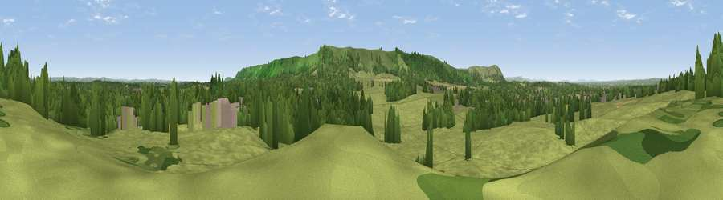

Viewpoint near Ditchling
#25596 in England · top 51% of its area beats it · near DitchlingThe view, rendered

A 360° render of this exact spot computed from the terrain model, tree cover and land cover — summer colours, afternoon light, calibrated against photographs of famous viewpoints. Real trees, hedges and buildings will differ in detail.
The panorama
Grey silhouette: terrain skyline in each direction (720 bearings, Earth curvature and refraction included). Dashed green: skyline with trees (+15 m) and buildings (+8 m) as obstacles. Blue strip: how far the ground is visible on each bearing.
Where the view opens
Wedge length = distance to the farthest visible ground on that bearing (vegetation-aware). Rings at 10, 25 and 50 km.
What fills the view
68% grassland · 26% woodland · 4% built-up · 2% cropland
Angular shares of the visible panorama (visual magnitude), not map area. Landscape diversity 0.36 (0–1 Shannon).
Key numbers
More beautiful places nearby
The staircase of upgrades: each row has a higher view potential than everything closer. Driving times are estimates from straight-line distance, calibrated against real road routing — check an actual route before setting out.
| Place | Direction | Drive | Score |
|---|---|---|---|
| Viewpoint near Westmeston | S · 2 km | ~6 min | 81.1 |
| Ditchling Beacon | SSE · 3 km | ~7 min | 81.8 |
| Fulking Hill | WSW · 9 km | ~17 min | 82.2 |
| Viewpoint near Firle | SE · 17 km | ~29 min | 83.8 |
| Viewpoint near Firle | ESE · 18 km | ~31 min | 85.4 |
| Chanctonbury Ring | W · 19 km | ~32 min | 87.0 |
| Firle Beacon | ESE · 19 km | ~32 min | 88.9 |
| Viewpoint near Niton | WSW · 92 km | ~116 min | 89.2 |
50.92445, -0.11791 · source: screening · position refined by local search. Computed location — check access rights before visiting.